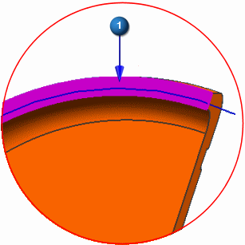
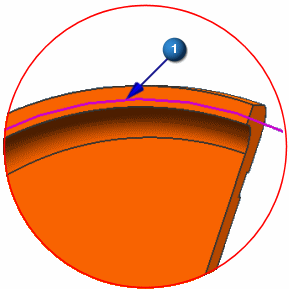
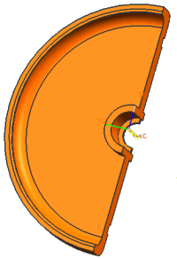

Divide the face
You will use the arc to divide the face.
 Divide Face (Model Preparation toolbar)
Divide Face (Model Preparation toolbar)
-
 Faces to Divide (Select Face)
Faces to Divide (Select Face)
-

 the face
the face

-
Object (Select Object)
-
the arc

-
OK

 Save (Standard toolbar)
Save (Standard toolbar)